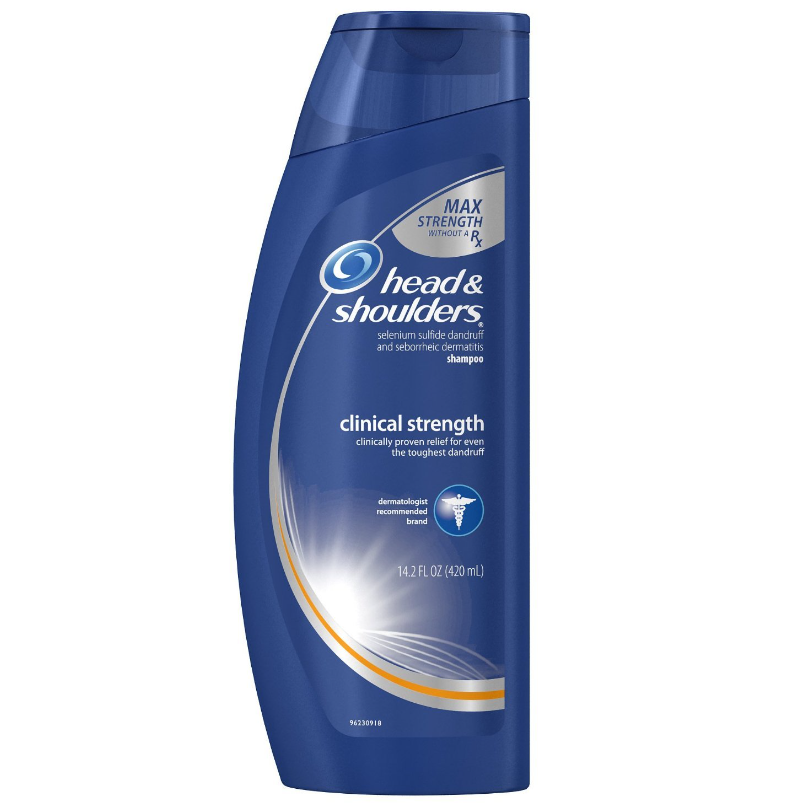
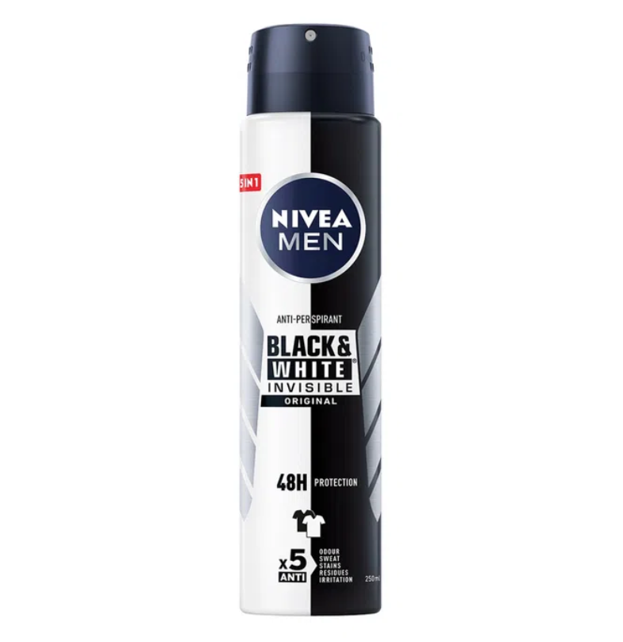
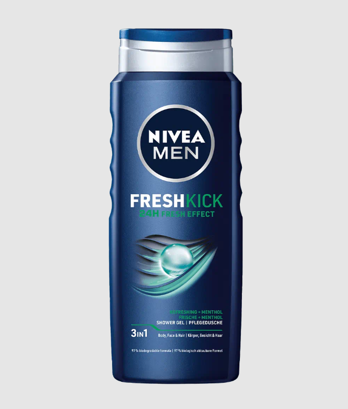
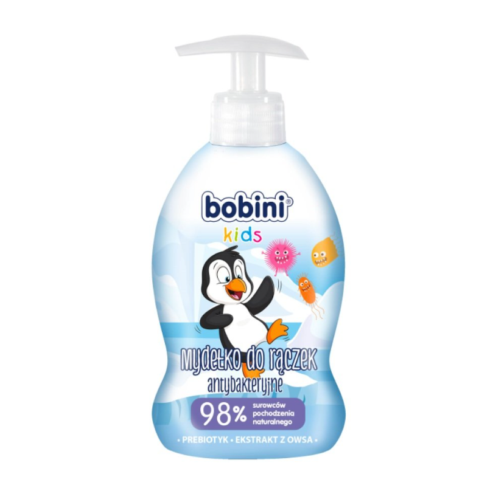

Tu można się zapoznać z tym jak wyglądają użyteczne do higieny środki
czystości. Popodziwiać zadowolonych klientów. Oraz obejrzeć
edukacyjny film jak myć zęby.




UWAGA!
Zalecane jest przed obejrzeniem nagrania przygotowanie sobie
szczoteczki do zębów (wyjętej z opakowania), pasty do zębów oraz
kubeczka z wodą.